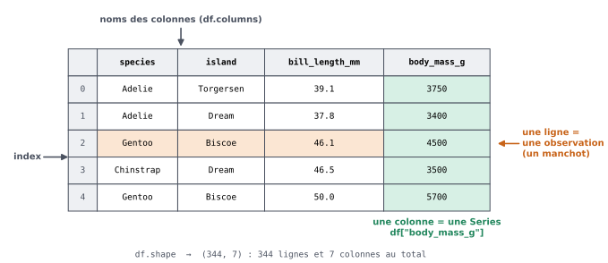
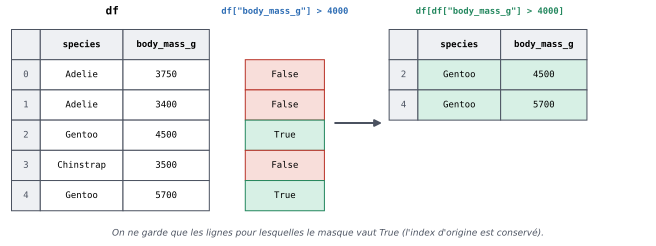
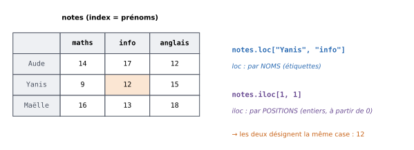

11. Découvrir ses données avec pandas#
Objectifs du chapitre
À la fin de ce chapitre, vous saurez :
expliquer ce que sont un
DataFrameet uneSeries;charger un fichier CSV avec
pd.read_csv(y compris un fichier « à la française ») ;obtenir une vue d’ensemble d’un jeu de données (
head,shape,info,describe,value_counts) ;sélectionner des colonnes, filtrer des lignes et trier un tableau ;
utiliser
locetiloc.
Prérequis : chapitres 1 à 10 (en particulier les listes, les dictionnaires et les masques numpy). Durée indicative : 2h30.
En analyse de données, on travaille presque toujours sur des tableaux : une ligne par individu observé (un étudiant, un client, une commune…) et une colonne par caractéristique mesurée (âge, revenu, population…).
La bibliothèque pandas est l’outil de référence en Python pour manipuler de tels tableaux : on peut la voir comme un tableur programmable, avec lequel chaque manipulation est écrite dans du code, et donc reproductible, vérifiable et réutilisable sur de nouvelles données.
Où travailler ?
À partir de ce chapitre, travaillez dans un notebook Jupyter (avec Anaconda, VS Code, ou en ligne sur Google Colab, voir l’introduction) : on y voit directement les tableaux et les graphiques sous chaque cellule de code, ce qui est idéal pour explorer des données.
Les fenêtres de code intégrées à la version web de ce document ne disposent pas de pandas.
Si pandas n’est pas installé, installez-le avec pip install pandas (il est inclus dans Anaconda et dans Google Colab).
Par convention, on importe pandas sous le nom pd :
import pandas as pd
Si vous venez de R ou de SAS
Un DataFrame est l’équivalent d’un data.frame (ou d’un tibble) en R, et d’une table SAS. Voici les correspondances des opérations de ce chapitre :
Opération |
R (base / |
SAS |
|
|---|---|---|---|
Lire un CSV |
|
|
|
Premières lignes |
|
|
|
Dimensions |
|
|
|
Structure |
|
|
|
Statistiques |
|
|
|
Effectifs |
|
|
|
Une colonne |
|
|
|
Plusieurs colonnes |
|
|
|
Filtrer |
|
|
|
Trier |
|
|
|
Valeur manquante |
|
|
|
Deux différences importantes :
les lignes d’un
DataFrameont un index (par défaut 0, 1, 2…), qui est conservé lors d’un filtre : après un filtre, les numéros de lignes ne sont donc plus consécutifs (utilisezreset_index(drop=True)pour les renuméroter) ;les colonnes se désignent par des chaînes de caractères (
df["x"]), et non par des noms nus comme dansdplyrou SAS.
11.1. Le jeu de données de ce chapitre#
Nous allons travailler sur un jeu de données réel, très utilisé pour apprendre l’analyse de données : les manchots de l’archipel Palmer (Palmer penguins), collectés en Antarctique par la Dr. Kristen Gorman entre 2007 et 2009 et diffusés librement. Il décrit 344 manchots de trois espèces (Adélie, à jugulaire — Chinstrap — et papou — Gentoo), vivant sur trois îles, avec pour chacun :
Colonne |
Signification |
|---|---|
|
espèce |
|
île |
|
longueur et épaisseur du bec (en mm) |
|
longueur de la nageoire (en mm) |
|
masse (en g) |
|
sexe ( |
Le fichier se trouve dans donnees/penguins.csv.
Si vous n’avez pas le fichier
La bibliothèque seaborn (que nous utiliserons au chapitre 13) peut télécharger ce jeu de données pour vous : import seaborn as sns puis df = sns.load_dataset("penguins") (une connexion internet est nécessaire).
Le tableau obtenu est le même, aux majuscules près dans la colonne sex (Male / Female).
11.2. DataFrame et Series#
Chargeons le fichier avec la fonction pd.read_csv et affichons ses premières lignes avec la méthode head :
df = pd.read_csv("donnees/penguins.csv")
df.head()
| species | island | bill_length_mm | bill_depth_mm | flipper_length_mm | body_mass_g | sex | |
|---|---|---|---|---|---|---|---|
| 0 | Adelie | Torgersen | 39.1 | 18.7 | 181.0 | 3750.0 | MALE |
| 1 | Adelie | Torgersen | 39.5 | 17.4 | 186.0 | 3800.0 | FEMALE |
| 2 | Adelie | Torgersen | 40.3 | 18.0 | 195.0 | 3250.0 | FEMALE |
| 3 | Adelie | Torgersen | NaN | NaN | NaN | NaN | NaN |
| 4 | Adelie | Torgersen | 36.7 | 19.3 | 193.0 | 3450.0 | FEMALE |
Remarque
Dans un notebook, la dernière expression d’une cellule est affichée automatiquement : c’est pourquoi on écrit simplement df.head() sans print.
Les tableaux sont alors joliment mis en forme. Dans un script .py, il faut écrire print(df.head()).
L’objet df est un DataFrame : un tableau à deux dimensions, dont chaque colonne a un nom et chaque ligne une étiquette (l”index, ici simplement les entiers 0, 1, 2…).
Chaque colonne, prise isolément, est une Series : une suite de valeurs du même type, accompagnée de l’index.


Fig. 11.1 Anatomie d’un DataFrame (ici un extrait de 5 lignes et 4 colonnes du jeu de données).#
masses = df["body_mass_g"]
print(type(df))
print(type(masses))
masses.head()
<class 'pandas.DataFrame'>
<class 'pandas.Series'>
0 3750.0
1 3800.0
2 3250.0
3 NaN
4 3450.0
Name: body_mass_g, dtype: float64
On peut aussi créer un DataFrame « à la main », à partir d’un dictionnaire associant à chaque nom de colonne la liste de ses valeurs :
petit = pd.DataFrame({
"prenom": ["Aude", "Yanis", "Maëlle"],
"maths": [14, 9, 16],
"info": [17, 12, 13]
})
petit
| prenom | maths | info | |
|---|---|---|---|
| 0 | Aude | 14 | 17 |
| 1 | Yanis | 9 | 12 |
| 2 | Maëlle | 16 | 13 |
À retenir
Un
DataFrameest un tableau : une ligne par observation, une colonne par variable.Une colonne d’un
DataFrameest uneSeries, que l’on obtient avecdf["nom_de_colonne"].Une
Seriesressemble à un tableaunumpyà une dimension (on peut faire des calculs sur toute la colonne d’un coup, sans boucle), avec en plus un index.
11.3. Charger un fichier CSV#
pd.read_csv accepte de nombreux arguments pour s’adapter au format du fichier. Les plus utiles sont :
Argument |
Rôle |
Exemple |
|---|---|---|
|
délimiteur des colonnes (par défaut |
|
|
séparateur décimal (par défaut |
|
|
encodage du fichier (par défaut UTF-8) |
|
|
colonne à utiliser comme index |
|
|
valeurs à considérer comme manquantes |
|
Les fichiers produits par un tableur réglé en français utilisent souvent le point-virgule comme délimiteur et la virgule comme séparateur décimal.
Le fichier donnees/notes.csv, déjà utilisé au chapitre 9, utilise des points-virgules :
notes = pd.read_csv("donnees/notes.csv", sep=";")
notes
| nom | prenom | maths | info | anglais | |
|---|---|---|---|---|---|
| 0 | Martin | Aude | 14 | 17 | 12 |
| 1 | Benali | Yanis | 9 | 12 | 15 |
| 2 | Le Goff | Maëlle | 16 | 13 | 18 |
| 3 | Dupont | Hugo | 7 | 10 | 9 |
| 4 | Nguyen | Linh | 12 | 19 | 14 |
| 5 | Kerbrat | Erwan | 11 | 8 | 13 |
| 6 | Diallo | Fatou | 15 | 14 | 16 |
| 7 | Moreau | Inès | 10 | 11 | 8 |
Comparez avec le chapitre 9 : une seule ligne suffit à lire le fichier, et les notes sont automatiquement converties en nombres !
Erreur fréquente
Si vous oubliez sep=";" pour un fichier séparé par des points-virgules, pandas ne voit qu”une seule colonne, dont le nom est toute la ligne d’en-tête ("nom;prenom;maths;info;anglais").
Premier réflexe après un chargement : toujours regarder le résultat avec head() et shape.
11.4. Explorer un jeu de données#
Avant toute analyse, il faut prendre connaissance des données : combien de lignes ? quelles colonnes ? quels types ? y a-t-il des valeurs manquantes ? Voici les outils de base.
11.4.1. Dimensions et colonnes#
print(df.shape) # (nombre de lignes, nombre de colonnes) : un tuple
print(df.columns) # noms des colonnes
(344, 7)
Index(['species', 'island', 'bill_length_mm', 'bill_depth_mm',
'flipper_length_mm', 'body_mass_g', 'sex'],
dtype='str')
Les méthodes head(n) et tail(n) affichent les n premières et dernières lignes (5 par défaut) ; sample(n) affiche n lignes tirées au hasard.
11.4.2. Types et valeurs manquantes : info#
df.info()
<class 'pandas.DataFrame'>
RangeIndex: 344 entries, 0 to 343
Data columns (total 7 columns):
# Column Non-Null Count Dtype
--- ------ -------------- -----
0 species 344 non-null str
1 island 344 non-null str
2 bill_length_mm 342 non-null float64
3 bill_depth_mm 342 non-null float64
4 flipper_length_mm 342 non-null float64
5 body_mass_g 342 non-null float64
6 sex 333 non-null str
dtypes: float64(4), str(3)
memory usage: 18.9 KB
info indique, pour chaque colonne, le nombre de valeurs non manquantes (non-null) et le type des données : float64 pour des nombres à virgule, int64 pour des entiers, object ou str pour du texte.
On voit ici que le sexe n’est pas renseigné pour 11 manchots (333 valeurs sur 344), et que 2 manchots n’ont pas de mesures.
Dans pandas, une valeur manquante est notée NaN (Not a Number) ; nous verrons au chapitre suivant comment les traiter.
11.4.3. Statistiques descriptives : describe#
df.describe()
| bill_length_mm | bill_depth_mm | flipper_length_mm | body_mass_g | |
|---|---|---|---|---|
| count | 342.000000 | 342.000000 | 342.000000 | 342.000000 |
| mean | 43.921930 | 17.151170 | 200.915205 | 4201.754386 |
| std | 5.459584 | 1.974793 | 14.061714 | 801.954536 |
| min | 32.100000 | 13.100000 | 172.000000 | 2700.000000 |
| 25% | 39.225000 | 15.600000 | 190.000000 | 3550.000000 |
| 50% | 44.450000 | 17.300000 | 197.000000 | 4050.000000 |
| 75% | 48.500000 | 18.700000 | 213.000000 | 4750.000000 |
| max | 59.600000 | 21.500000 | 231.000000 | 6300.000000 |
Pour chaque colonne numérique, describe donne le nombre de valeurs (count), la moyenne (mean), l’écart-type (std), le minimum, les quartiles (25 %, 50 % = médiane, 75 %) et le maximum.
C’est un excellent moyen de repérer des valeurs aberrantes (une masse négative, un âge de 300 ans…).
11.4.4. Variables qualitatives : value_counts et unique#
Pour une colonne contenant des catégories, on compte les effectifs de chaque modalité avec value_counts :
df["species"].value_counts()
species
Adelie 152
Gentoo 124
Chinstrap 68
Name: count, dtype: int64
print(df["island"].unique()) # les valeurs distinctes
print(df["island"].nunique()) # leur nombre
print(df["species"].value_counts(normalize=True)) # proportions plutôt qu'effectifs
<StringArray>
['Torgersen', 'Biscoe', 'Dream']
Length: 3, dtype: str
3
species
Adelie 0.441860
Gentoo 0.360465
Chinstrap 0.197674
Name: proportion, dtype: float64
11.4.5. Calculs sur une colonne#
Comme pour les tableaux numpy, les méthodes mean, median, std, min, max, sum… s’appliquent à toute une colonne (les valeurs manquantes sont automatiquement ignorées) :
print(df["body_mass_g"].mean())
print(df["body_mass_g"].median())
print(df["flipper_length_mm"].max())
4201.754385964912
4050.0
231.0
Testez-vous
Quel est le type de
df.shape? Comment obtenir uniquement le nombre de lignes ?Que retourne
df["species"]? Etdf["species"].value_counts()?Pourquoi
df["sex"].mean()n’a-t-il pas de sens ?
Réponse
C’est un tuple
(nombre de lignes, nombre de colonnes); le nombre de lignes estdf.shape[0](on peut aussi utiliserlen(df)).df["species"]est uneSeriescontenant l’espèce de chaque manchot ;value_counts()retourne uneSeriesdont l’index est la liste des espèces et les valeurs leurs effectifs.La colonne
sexcontient du texte (une variable qualitative) : on ne peut pas en calculer la moyenne (Python produit d’ailleurs une erreur). On utilisera plutôtvalue_counts.
11.5. Sélectionner des colonnes#
Nous l’avons vu : df["nom"] sélectionne une colonne et retourne une Series.
Pour sélectionner plusieurs colonnes, on donne une liste de noms (d’où les doubles crochets) ; on obtient alors un DataFrame :
df[["species", "body_mass_g"]].head(3)
| species | body_mass_g | |
|---|---|---|
| 0 | Adelie | 3750.0 |
| 1 | Adelie | 3800.0 |
| 2 | Adelie | 3250.0 |
Erreur fréquente
df["species", "island"](sans les doubles crochets) provoque uneKeyError:pandascherche une colonne dont le nom serait le tuple("species", "island").Un nom de colonne mal orthographié (majuscules, espaces, accents…) provoque aussi une
KeyError. En cas de doute, affichezdf.columns.
11.6. Filtrer des lignes#
11.6.1. Avec un masque booléen#
Le filtrage des lignes reprend exactement le principe des masques vus avec numpy : une comparaison appliquée à une colonne produit une Series de booléens, que l’on utilise ensuite entre crochets pour ne garder que les lignes où le masque vaut True.


Fig. 11.2 Filtrer les lignes d’un DataFrame avec un masque booléen.#
masque = df["body_mass_g"] > 5500
print(masque.head())
lourds = df[masque]
print(len(lourds), "manchots de plus de 5,5 kg")
lourds.head()
0 False
1 False
2 False
3 False
4 False
Name: body_mass_g, dtype: bool
28 manchots de plus de 5,5 kg
| species | island | bill_length_mm | bill_depth_mm | flipper_length_mm | body_mass_g | sex | |
|---|---|---|---|---|---|---|---|
| 221 | Gentoo | Biscoe | 50.0 | 16.3 | 230.0 | 5700.0 | MALE |
| 223 | Gentoo | Biscoe | 50.0 | 15.2 | 218.0 | 5700.0 | MALE |
| 231 | Gentoo | Biscoe | 49.0 | 16.1 | 216.0 | 5550.0 | MALE |
| 233 | Gentoo | Biscoe | 48.4 | 14.6 | 213.0 | 5850.0 | MALE |
| 235 | Gentoo | Biscoe | 49.3 | 15.7 | 217.0 | 5850.0 | MALE |
On écrit généralement le filtre directement entre crochets : df[df["body_mass_g"] > 5500].
Pour une colonne de texte, on teste l’égalité avec ==, ou l’appartenance à une liste de valeurs avec la méthode isin :
adelie = df[df["species"] == "Adelie"]
print(adelie.shape)
deux_iles = df[df["island"].isin(["Dream", "Biscoe"])]
print(deux_iles.shape)
(152, 7)
(292, 7)
11.6.2. Combiner des conditions#
Pour combiner plusieurs conditions, on utilise & (et), | (ou) et ~ (non), en mettant chaque condition entre parenthèses :
femelles_gentoo = df[(df["species"] == "Gentoo") & (df["sex"] == "FEMALE")]
print(len(femelles_gentoo))
extremes = df[(df["body_mass_g"] < 3000) | (df["body_mass_g"] > 6000)]
extremes
58
| species | island | bill_length_mm | bill_depth_mm | flipper_length_mm | body_mass_g | sex | |
|---|---|---|---|---|---|---|---|
| 47 | Adelie | Dream | 37.5 | 18.9 | 179.0 | 2975.0 | NaN |
| 54 | Adelie | Biscoe | 34.5 | 18.1 | 187.0 | 2900.0 | FEMALE |
| 58 | Adelie | Biscoe | 36.5 | 16.6 | 181.0 | 2850.0 | FEMALE |
| 64 | Adelie | Biscoe | 36.4 | 17.1 | 184.0 | 2850.0 | FEMALE |
| 98 | Adelie | Dream | 33.1 | 16.1 | 178.0 | 2900.0 | FEMALE |
| 104 | Adelie | Biscoe | 37.9 | 18.6 | 193.0 | 2925.0 | FEMALE |
| 116 | Adelie | Torgersen | 38.6 | 17.0 | 188.0 | 2900.0 | FEMALE |
| 174 | Chinstrap | Dream | 43.2 | 16.6 | 187.0 | 2900.0 | FEMALE |
| 190 | Chinstrap | Dream | 46.9 | 16.6 | 192.0 | 2700.0 | FEMALE |
| 237 | Gentoo | Biscoe | 49.2 | 15.2 | 221.0 | 6300.0 | MALE |
| 253 | Gentoo | Biscoe | 59.6 | 17.0 | 230.0 | 6050.0 | MALE |
À retenir
Avec pandas (et numpy), on combine des masques avec &, | et ~, et non avec and, or et not (qui provoquent l’erreur ValueError: The truth value of a Series is ambiguous).
Les parenthèses autour de chaque condition sont obligatoires : df["a"] > 1 & df["b"] < 2 ne fait pas ce que l’on croit, car & est prioritaire sur >.
Testez-vous
Écrivez le filtre qui sélectionne :
les manchots de l’île Torgersen ;
les manchots dont la nageoire mesure au moins 200 mm, sauf ceux de l’espèce Gentoo ;
les manchots dont le sexe n’est pas renseigné (indice : la méthode
isna()d’uneSeriesretourne un masque).
Réponse
df[df["island"] == "Torgersen"]df[(df["flipper_length_mm"] >= 200) & (df["species"] != "Gentoo")](ou& ~(df["species"] == "Gentoo"))df[df["sex"].isna()]
11.7. loc et iloc#
Pour sélectionner à la fois des lignes et des colonnes, on utilise les accesseurs loc et iloc, avec la syntaxe [lignes, colonnes] :
df.loc[...]sélectionne par étiquettes : noms des lignes (l’index) et noms des colonnes ;df.iloc[...]sélectionne par positions : numéros de lignes et de colonnes, comptés à partir de 0, comme pour les listes.


Fig. 11.3 loc utilise les noms, iloc les positions.#
notes = pd.read_csv("donnees/notes.csv", sep=";", index_col="prenom")
notes
| nom | maths | info | anglais | |
|---|---|---|---|---|
| prenom | ||||
| Aude | Martin | 14 | 17 | 12 |
| Yanis | Benali | 9 | 12 | 15 |
| Maëlle | Le Goff | 16 | 13 | 18 |
| Hugo | Dupont | 7 | 10 | 9 |
| Linh | Nguyen | 12 | 19 | 14 |
| Erwan | Kerbrat | 11 | 8 | 13 |
| Fatou | Diallo | 15 | 14 | 16 |
| Inès | Moreau | 10 | 11 | 8 |
print(notes.loc["Yanis", "info"])
print(notes.iloc[1, 2])
notes.loc[["Aude", "Inès"], ["maths", "info"]]
12
12
| maths | info | |
|---|---|---|
| prenom | ||
| Aude | 14 | 17 |
| Inès | 10 | 11 |
Ici, la colonne nom est la colonne de position 0 : la colonne info a donc la position 2 (contrairement au schéma, qui ne contient pas la colonne nom).
Comme pour les listes, on peut utiliser des tranches (debut:fin), et : seul signifie « tout ».
Attention : avec loc, la borne de fin est incluse (puisque l’on travaille avec des noms), alors qu’avec iloc elle est exclue :
notes.loc["Aude":"Maëlle", "maths":"info"] # Maëlle et info inclus
| maths | info | |
|---|---|---|
| prenom | ||
| Aude | 14 | 17 |
| Yanis | 9 | 12 |
| Maëlle | 16 | 13 |
notes.iloc[0:3, 1:3] # lignes 0 à 2, colonnes 1 et 2
| maths | info | |
|---|---|---|
| prenom | ||
| Aude | 14 | 17 |
| Yanis | 9 | 12 |
| Maëlle | 16 | 13 |
L’utilisation la plus fréquente de loc consiste à combiner un filtre sur les lignes et une sélection de colonnes :
notes.loc[notes["maths"] >= 14, ["nom", "maths"]]
| nom | maths | |
|---|---|---|
| prenom | ||
| Aude | Martin | 14 |
| Maëlle | Le Goff | 16 |
| Fatou | Diallo | 15 |
11.8. Trier#
La méthode sort_values trie les lignes selon une ou plusieurs colonnes (ordre croissant par défaut) :
df.sort_values("body_mass_g", ascending=False).head(3)
| species | island | bill_length_mm | bill_depth_mm | flipper_length_mm | body_mass_g | sex | |
|---|---|---|---|---|---|---|---|
| 237 | Gentoo | Biscoe | 49.2 | 15.2 | 221.0 | 6300.0 | MALE |
| 253 | Gentoo | Biscoe | 59.6 | 17.0 | 230.0 | 6050.0 | MALE |
| 337 | Gentoo | Biscoe | 48.8 | 16.2 | 222.0 | 6000.0 | MALE |
# Tri selon l'espèce, puis par masse décroissante au sein de chaque espèce
df.sort_values(["species", "body_mass_g"], ascending=[True, False]).head()
| species | island | bill_length_mm | bill_depth_mm | flipper_length_mm | body_mass_g | sex | |
|---|---|---|---|---|---|---|---|
| 109 | Adelie | Biscoe | 43.2 | 19.0 | 197.0 | 4775.0 | MALE |
| 101 | Adelie | Biscoe | 41.0 | 20.0 | 203.0 | 4725.0 | MALE |
| 81 | Adelie | Torgersen | 42.9 | 17.6 | 196.0 | 4700.0 | MALE |
| 7 | Adelie | Torgersen | 39.2 | 19.6 | 195.0 | 4675.0 | MALE |
| 39 | Adelie | Dream | 39.8 | 19.1 | 184.0 | 4650.0 | MALE |
Comme les méthodes des chaînes de caractères, la plupart des méthodes de pandas ne modifient pas le DataFrame : elles en retournent un nouveau.
Pour conserver le résultat, il faut l’affecter à une variable : df_trie = df.sort_values(...).
11.9. Exercices#
Rappel
Ces exercices sont à faire dans un notebook Jupyter, avec le fichier donnees/penguins.csv (sauf mention contraire).
Commencez chaque notebook par import pandas as pd et df = pd.read_csv("donnees/penguins.csv").
Exercice 11.1 : Premier contact ★
Combien y a-t-il de manchots de chaque sexe ? Combien n’ont pas de sexe renseigné ?
Quelle est la longueur moyenne du bec ? La longueur minimale et maximale de la nageoire ?
Sur combien d’îles différentes les manchots ont-ils été observés ?
Indice
value_counts ignore les valeurs manquantes par défaut ; ajoutez l’argument dropna=False pour les compter aussi.
Solution
import pandas as pd
df = pd.read_csv("donnees/penguins.csv")
print(df["sex"].value_counts(dropna=False)) # 168 MALE, 165 FEMALE, 11 NaN
print(df["bill_length_mm"].mean())
print(df["flipper_length_mm"].min(), df["flipper_length_mm"].max())
print(df["island"].nunique())
Exercice 11.2 : Filtres ★
Combien de manchots de l’espèce Adelie vivent sur l’île Dream ?
Affichez l’espèce, l’île et la masse des 5 manchots les plus légers.
Quelle est la masse moyenne des manchots Gentoo ? Et celle des mâles Gentoo ?
Solution
import pandas as pd
df = pd.read_csv("donnees/penguins.csv")
# 1.
print(len(df[(df["species"] == "Adelie") & (df["island"] == "Dream")])) # 56
# 2.
print(df.sort_values("body_mass_g")[["species", "island", "body_mass_g"]].head(5))
# 3.
gentoo = df[df["species"] == "Gentoo"]
print(gentoo["body_mass_g"].mean())
print(gentoo[gentoo["sex"] == "MALE"]["body_mass_g"].mean())
# ou, en une seule sélection :
print(df.loc[(df["species"] == "Gentoo") & (df["sex"] == "MALE"), "body_mass_g"].mean())
Exercice 11.3 : Le fichier de notes ★★
Chargez le fichier donnees/notes.csv dans un DataFrame (attention au délimiteur !), puis :
affichez les étudiants ayant plus de 15 en informatique ;
affichez le nom et le prénom des étudiants ayant au moins 10 dans les trois matières ;
affichez le tableau trié par note d’anglais décroissante.
Solution
import pandas as pd
notes = pd.read_csv("donnees/notes.csv", sep=";")
print(notes[notes["info"] > 15])
tous_admis = notes[(notes["maths"] >= 10) & (notes["info"] >= 10) & (notes["anglais"] >= 10)]
print(tous_admis[["nom", "prenom"]])
print(notes.sort_values("anglais", ascending=False))
Exercice 11.4 : Comparer les espèces ★★
Sans utiliser de boucle explicite sur les lignes, mais en utilisant une boucle sur les noms d’espèces (obtenus avec unique), affichez pour chaque espèce son nombre d’individus, sa masse moyenne et la longueur moyenne de son bec, avec une décimale.
(Le chapitre suivant présentera un outil, groupby, qui fait cela en une ligne.)
Solution
import pandas as pd
df = pd.read_csv("donnees/penguins.csv")
for espece in df["species"].unique():
sous_df = df[df["species"] == espece]
print(f"{espece:<10} : {len(sous_df)} individus, "
f"masse moyenne {sous_df['body_mass_g'].mean():.1f} g, "
f"bec {sous_df['bill_length_mm'].mean():.1f} mm")
Exercice 11.5 : Le Titanic ★★
Le fichier donnees/titanic.csv contient des informations sur 891 passagers du Titanic : survived (1 si le passager a survécu, 0 sinon), pclass (classe de 1 à 3), sex, age, fare (prix du billet), embark_town (port d’embarquement), etc.
Chargez le fichier et explorez-le (
shape,info,describe). Quelles colonnes ont des valeurs manquantes ?Combien de passagers ont survécu ? Quelle proportion cela représente-t-il ? (Astuce : quelle est la moyenne d’une colonne qui ne contient que des 0 et des 1 ?)
Quel est le taux de survie des femmes ? Des hommes ?
Quel était le prix moyen d’un billet en 1re classe ? En 3e classe ?
Solution
import pandas as pd
titanic = pd.read_csv("donnees/titanic.csv")
print(titanic.shape)
titanic.info() # age, embarked, deck et embark_town ont des valeurs manquantes
print(titanic["survived"].sum()) # 342 survivants
print(titanic["survived"].mean()) # environ 0.38 : la moyenne d'une colonne de 0/1 est une proportion
print(titanic[titanic["sex"] == "female"]["survived"].mean()) # environ 0.74
print(titanic[titanic["sex"] == "male"]["survived"].mean()) # environ 0.19
print(titanic[titanic["pclass"] == 1]["fare"].mean()) # environ 84
print(titanic[titanic["pclass"] == 3]["fare"].mean()) # environ 13.7
11.10. Bilan du chapitre#
À retenir
import pandas as pd;df = pd.read_csv("fichier.csv", sep=";", decimal=",").Un
DataFrameest un tableau (lignes = observations, colonnes = variables) ; une colonnedf["col"]est uneSeries.Explorer :
head(),shape,columns,info(),describe(),value_counts(),unique(),nunique().Colonnes :
df["col"](uneSeries),df[["col1", "col2"]](unDataFrame).Filtrer :
df[df["col"] > 10]; combiner avec&,|,~et des parenthèses ;isin([...]).df.loc[lignes, colonnes](par noms, fin incluse),df.iloc[lignes, colonnes](par positions, fin exclue).Trier :
df.sort_values("col", ascending=False).
Faites le point : êtes-vous capable de…
charger un fichier CSV, y compris avec un délimiteur
;?décrire un jeu de données inconnu : taille, colonnes, types, valeurs manquantes, statistiques ?
compter les effectifs d’une variable qualitative ?
sélectionner les lignes vérifiant plusieurs conditions ?
expliquer la différence entre
locetiloc?